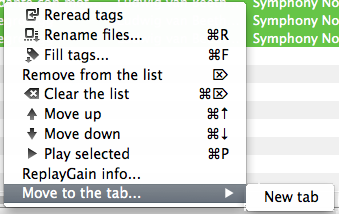

Manage Files Order
If you want to move the selected files up or down the list, press shortcuts ⌘↑ or ⌘↓.
You can also sort files by any tag or file name by clicking on the column header.
To move selected files into the other (or new) tab, right-click on them and choose the Move to the tab... menu item:

Note: As Qoobar don't track the files order in the undo/redo operations, files moving and sorting clear the undo stack.
© 2009-2015 Alex Novichkov